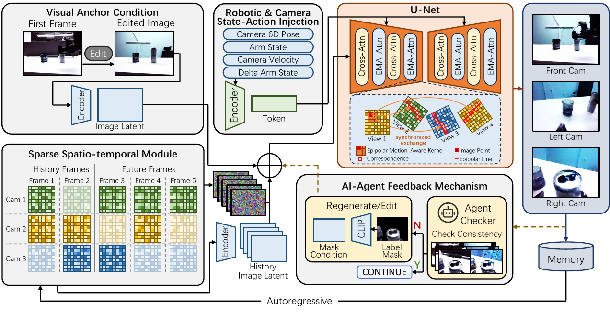

Sparse long-range context
SST retains informative observations across long trajectories under a compact attention budget, helping recover appearance and identity after motion or occlusion.
Robot learning · Multi-view video editing
Overview
Robot policies learn from multi-view image trajectories paired with actions, yet collecting demonstrations across diverse visual conditions remains expensive. Visual edits that preserve robot and object geometry, motion, and action labels can expand demonstration datasets without additional collection.
We introduce Editing Robot Multi-View trajectories (ERMV), a diffusion editor that jointly processes the observed 4D trajectory as a time–view grid and conditions explicitly on recorded state and action. A Sparse Spatio-Temporal selector allocates compact long-range context, Epipolar Motion-Aware Attention aligns synchronized views through state- and action-conditioned supports, and an autonomous feedback cascade prevents task-critical errors from propagating through autoregressive memory.
Experiments span simulation, real-world recordings, physical Franka Panda deployment, sim-to-real transfer, and five policy families. The results show that visual diversity is most useful when it remains tied to the demonstrated interaction.
Approach
ERMV organizes diffusion around the structure already present in a robot demonstration: time, synchronized camera views, robot state, and action.
SST retains informative observations across long trajectories under a compact attention budget, helping recover appearance and identity after motion or occlusion.
EMA-Attn couples synchronized cameras through localized epipolar supports modulated by the recorded motion, while preserving self evidence when another view is unreliable.
Trajectory diagnostics guide acceptance, regeneration, or local correction before an edited segment becomes context for subsequent windows—without human intervention.

Evaluation
ERMV is evaluated as both a video editor and a data engine: edited trajectories should look different, preserve the demonstrated interaction, and make policies more robust to visual shift.
Consistent downstream evaluation across conventional policies, VLA models, and a world–action model.
Success improvement under visual shifts over source-only training across the five policy families.
Evaluation includes physical cup-to-plate placement and sim-to-real deployment, beyond visual metrics alone.
Simulation editing
The top row shows the source observations and the bottom row shows the corresponding ERMV edit. The appearance changes across all views while robot motion and scene correspondence remain aligned.
Qualitative comparisons
The tested image-to-video systems receive the edited first frame and a text description. They can synthesize visually compelling clips, but their interfaces do not receive the recorded robot actions or companion camera streams available to ERMV.
Physical deployment
ACT is trained either without augmentation or with ERMV-augmented trajectories, then evaluated on the same cup-to-plate objective in the seen setup and an unseen cluttered setup.
Reference
@article{nie2025ermv,
title = {ERMV: Action-Aligned 4D Robot-Trajectory Editing with
State-Conditioned Epipolar Motion Kernels},
author = {Nie, Chang and Deng, Tianchen and Wang, Guangming and
Liu, Zhe and Wang, Hesheng},
journal = {arXiv preprint arXiv:2507.17462},
year = {2025}
}